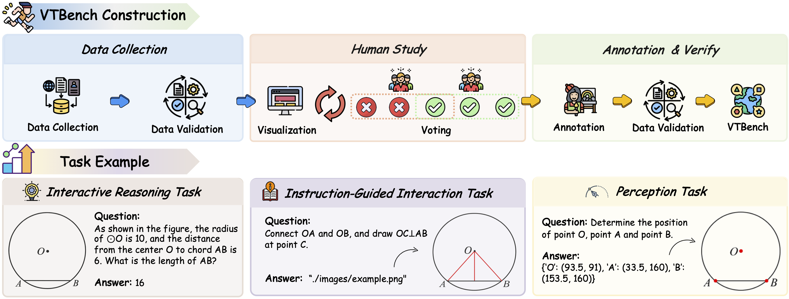

AI NEWS ISSUE 41
V-Thinker, 이미지 조작까지 평가한다
시각 추론의 학습·평가 자료가 공개됐습니다. 환경단체의 이미지·문서 분석 사례와 IMF의 투자 위험 경고도 함께 읽으며, 검증을 마친 업무 한 건에 드는 시간과 자원을 살펴봅니다.
AT A GLANCE
30초 요약
- V-Thinker 학습 데이터 프리뷰 두 종류와 VTBench 공개를 안내했습니다. 위치 찾기, 지시대로 이미지 조작하기, 조작을 활용해 답하기를 나눠 평가합니다.
- 환경단체의 활용 Reuters는 사진 분석과 손글씨 기록 정리에 쓰이는 사례를 취재했습니다. 작업시간 단축과 함께 캐싱·선박 내 분석으로 반복 계산과 전송을 줄이는 방식도 소개했습니다.
- IMF의 경고 게오르기에바 총재는 AI 투자에 따른 성장세가 둔화할 가능성과 시장 변동성을 중앙은행이 고려해야 한다고 말했습니다.
자료 확인 2026년 11월 8일 한국시간 기준. 저장소의 11월 7일자 공개 안내, 11월 6~7일 Reuters 보도와 관련 공식 자료를 확인했습니다. 이전 연구·사업 자료는 배경으로 구분했습니다.
01 / V-THINKER · VTBENCH
정답에 이르기 전에,
그림을 제대로 다뤘는지 봅니다
V-Thinker 연구진은 공식 저장소의 11월 7일자 안내에서 이미지 상호작용 학습 데이터 두 종류와 평가 데이터 VTBench를 공개했다고 밝혔습니다. V-Thinker는 이미지에 선을 긋거나 표시하고 변형한 결과를 다음 추론에 활용하는 연구입니다. 공개 안내 ↗
| 자료 | 무엇에 쓰나요 | 공개 안내의 규모 |
|---|---|---|
| V-Interaction-400K | 이미지와 상호작용하는 추론 학습 | 프리뷰 약 25만 2천 건 |
| V-Perception-40K | 점·위치 인식 학습 | 프리뷰 약 3만 7천 건 |
| VTBench | 세 유형의 시각 추론 평가 | 논문 기준 유형별 500개, 총 1,500개 질문·응답 쌍 |
가령 원 안의 선분 길이를 구하는 문제라면, 점의 위치를 찾는 일과 보조선을 정확하게 긋는 일, 그 그림으로 답을 구하는 일은 각각 확인할 수 있습니다. VTBench는 이 세 능력을 분리해 봅니다. 지각·조작 과제는 만들어 낸 이미지를 기준 이미지와 대조해 모델로 채점하고, 추론 과제는 답의 정확성을 평가합니다. 논문의 평가 구성 ↗


논문은 2025년 11월 6일 처음 제출됐고 12월 18일 개정됐습니다. 이번 호에서는 저장소의 데이터 공개 안내를 다루며, 논문을 새로 나온 모델 발표로 소개하지 않습니다. 제출·개정 이력 ↗
업무 화면에서도 판단한 위치를 남길 수 있습니다
상품 상세 이미지의 가격이 등록 정보와 일치하는지 확인할 때도, 추출한 값과 그 값이 있던 영역을 함께 남기면 사람이 확인할 범위를 좁힐 수 있습니다. 글자가 흐리면 해당 영역을 다시 읽고, 숫자 대조는 코드로 처리하는 방식입니다.
이는 연구에서 아이디어를 얻은 업무 적용 제안입니다. VTBench의 수학·논리·통계 과제 성능만으로 상품 이미지 검증의 정확도를 알 수는 없으므로, 뒤에서 별도의 가상 자료로 시험할 방법을 제안합니다.
02 / CONSERVATION · WORK AND RESOURCES
사진과 기록을 먼저 정리하고,
사람이 확인할 결과를 남깁니다
Reuters는 11월 7일, 환경·보전·개발 관련 단체 15곳을 인터뷰한 기사를 보도했습니다. 모두 어떤 형태로든 AI를 쓰면서 데이터센터의 환경 영향도 우려한다고 답했습니다. 기존 프로젝트를 살펴본 현장 보도입니다. Reuters 보도 · MarketScreener 전재 ↗
SAVE THE ELEPHANTS · 단체 설명
항공 사진 약 20만 장
9명 · 9개월 → 유사 분석 수 시간
대표 Frank Pope는 지난해 케냐 보호구역의 사진을 사람이 검토한 규모와 기간을 이렇게 설명했습니다. AI는 유사 분석을 수 시간에 처리한다고 밝혔습니다.
JANE GOODALL INSTITUTE · 예상 기간
손글씨 관찰 기록의 디지털화
13~15년 → 약 2년 예상
연구소는 AWS와 만든 도구로 스캔한 기록을 번역·구조화하면서 전체 예상 기간이 줄었다고 설명했습니다. 약 2년은 완료 실적이 아닙니다.
두 기간은 Reuters 인터뷰에서 각 단체가 설명한 값입니다. 같은 데이터로 외부 기관이 재현한 비교나, 최종 검토·보고까지 포함한 전체 업무시간 측정치는 제시되지 않았습니다.
Jane Goodall Institute의 배경 자료를 보면 대상은 65년에 걸쳐 쌓인 관찰 기록입니다. AWS는 손글씨·영상·사진을 검색 가능한 연구 자료로 바꾸는 단계별 계획을 설명했습니다. 기록을 빠르게 구조화하는 작업과 연구자가 의미를 해석하는 작업을 나눠 볼 수 있는 사례입니다. AWS의 사업 소개 ↗
다시 계산하지 않고, 모든 영상을 전송하지 않습니다
같은 취재에서 World Resources Institute는 동일한 질의 결과를 캐싱하고 이미지·영상 생성은 제한적으로 쓴다고 설명했습니다. 이미 얻은 결과를 재사용하는 것도 자원 관리의 한 방법입니다.
The Nature Conservancy(TNC)는 어선의 영상을 선박 안에서 분석하는 구조를 공식 자료에 공개했습니다. 어종·어획 정보를 추출하고 선장의 전자 조업일지와 대조해 일일 요약을 보냅니다. 검토자는 예측과 관련 영상을 확인합니다. TNC의 시스템 소개 ↗
TNC · 보고서에서 사람이 확인하는 것
어획 숫자 옆에,
판단의 근거를 남깁니다
- 01선박 카메라조업 영상을 기록
- 02선내 분석어획 추출·일지 대조
- 03일일 보고서요약과 근거를 전달
보고서에 모이는 정보
- 어획 요약
- 보유·폐기 등 처리 유형별 건수
- 위험 항목
- 조업일지·어종·위치 등에 관한 표시
- 사건별 근거
- 어종, 처리 유형, 발생 시각, 모델 신뢰도와 근거 영상
사람이 확인할 지점
예측과 영상을 함께 봅니다표시된 어종·처리 유형을 해당 장면과 대조하고, 위험 표시의 근거를 확인합니다.
모델 신뢰도도 검토할 정보 중 하나캐싱은 반복 계산을, 선내 분석은 원격 전송 부담을 줄이는 설계입니다. 다만 호출 수나 전송량의 감소율을 그대로 전력·탄소 절감률로 환산할 수는 없습니다. 장비의 소비전력과 실행시간, 전력원까지 알아야 환경 영향을 계산할 수 있습니다.
03 / IMF · INVESTMENT AND GROWTH
투자가 만든 성장세와
실제로 거둘 수익을 함께 봅니다
크리스탈리나 게오르기에바 IMF 총재는 11월 6일 워싱턴 본부에서 AI가 이끄는 성장세가 둔화하면 중앙은행이 물가 대응을 판단할 때 반영해야 한다고 말했습니다. 투자 붐과 높은 기업가치에 대한 우려가 시장 변동성을 키우고 있다는 설명입니다. Reuters 전재본의 보도 시각은 한국시간 11월 7일 오전 8시 52분입니다. Reuters 보도 · AOL 전재 ↗
그는 AI 투자가 일부 국가의 성장을 뒷받침하는 동시에 물가 압력과 금융 안정성 우려도 더한다고 설명했습니다. 중앙은행은 성장세의 변화와 물가·시장의 움직임을 함께 살펴야 한다는 뜻입니다.
IMF 총재 발언 · Reuters 보도를 바탕으로 정리
투자 붐이 만드는 성장과
그 곁의 위험을 함께 봅니다
투자 붐이 성장에 힘을 보탭니다.
성장 지원과 물가 부담이 함께 나타날 수 있습니다.
시장 변동성과 금융 안정성 위험을 살펴야 합니다.
OUR VIEW
다음 사람이 다시 확인할 일을 줄입니다
세 소식은 연구 평가, 현장 활용, 경제 위험이라는 서로 다른 문제를 다룹니다. 우리 모임에서는 이 자료를 읽으며 ‘처리한 양’ 옆에 ‘검증을 마친 결과’를 놓아보자고 제안합니다.
서로 다른 단계의 성과를 구분합니다
- 인프라 투자
- 서버·네트워크·전력 설비에 얼마나 투자했는가
- 서비스 운영
- 실제 수요와 매출이 운영비·투자를 감당하는가
- 사용자의 업무
- 같은 품질의 일을 마치는 데 시간·비용이 줄었는가
우리 업무에서는 모델 이용료에 재시도·오류 수정·최종 검토를 더해 보아야 합니다. 응답이 빨라져도 담당자가 결과를 다시 읽는 시간이 늘면 기대한 절감이 사라질 수 있습니다. 반대로 호출 비용이 조금 높아도 같은 품질로 검토 시간을 더 많이 줄이면 전체 비용은 낮아질 수 있습니다.
상품 이미지에서 가격을 읽었다면 그 위치와 비교한 등록 정보가 남아야 합니다. 같은 이미지를 다시 처리할 때는 재사용해도 되는 결과인지 확인해야 합니다. 그러면 사람이 처음부터 읽고 대조하는 일을 줄일 여지가 생깁니다.
이번 과제에서는 AI가 이미지의 값을 읽고, 소프트웨어가 업무 규칙을 적용하며, 워크플로가 재시도·보류·검토 이력을 관리하면 됩니다. 추가 자료를 찾아 여러 단계를 판단해야 하는 일이 생길 때 Agent를 연결할 수 있습니다.
OUR LAB · 아직 실행하지 않은 실험 제안
가격이 다른 위치를 짚고,
다시 읽을 범위를 줄여 봅니다
가상 상품의 배너에는 39,000원, 등록 정보에는 42,000원이 적혀 있습니다. 검증기는 ‘가격 불일치’와 함께 배너에서 읽은 값·영역, 등록 정보의 버전을 반환해야 합니다. 가격 문구가 아예 없으면 ‘표시 없음’, 흐려서 읽지 못하면 ‘판독 보류’로 나눕니다.
가상 상품 P-017 · 입력에서 검토까지
- 입력배너 v1의 가격 39,000원 + 등록 정보 v1의 가격 42,000원
- AI 추출가격 39,000원, 이미지 내 좌표, 읽은 원문, 판독 상태를 반환
- 코드 대조두 값을 비교해 ‘불일치’와 비교에 사용한 버전을 기록
- 사람의 검토표시한 영역과 등록 값을 보고 불일치를 확인하거나 판정을 수정
전체 이미지 읽기와 필요한 영역 다시 읽기를 비교합니다
가상 상품 이미지 30개를 준비합니다. 6개는 지침·코드 조정용, 나머지 24개는 고정 평가용으로 분리합니다. 평가용은 정상 8개, 가격·배송 조건 불일치 8개, 비교할 문구가 없는 이미지 4개, 글자가 흐려 판독을 보류해야 하는 이미지 4개입니다. 비슷한 디자인의 변형은 양쪽에 나눠 넣지 않고 한 묶음으로 배정합니다.
정답표에는 항목별 값과 근거 영역, 기대 상태를 사람이 먼저 기록합니다. ‘표시 없음’ 4개는 이미지에 그 문구를 반드시 넣어야 하는 정책이 없다고 가정해, 누락을 오류로 판정하지 않습니다.
- A · 수동 대조 사람이 이미지와 등록 자료를 보고 같은 형식의 결과를 작성합니다.
- B · 한 번 읽기 모델이 전체 이미지에서 값을 추출하고 코드가 등록 자료와 비교합니다.
- C · 필요한 영역 다시 읽기 B와 같은 모델·지침으로 시작하되, 판독 보류 또는 값 불일치가 나온 영역을 한 번 확대해 다시 읽습니다.
B·C의 출력에는 항목명, 추출값, 원본 이미지 기준 좌표, 판독 상태를 담습니다. 좌표 범위를 벗어나거나 응답 형식이 잘못되면 정상으로 넘기지 않습니다. 확대 영역을 특정할 수 없거나 재분석에도 읽지 못한 경우, 시간 초과·호출 제한이 발생한 경우에는 사유를 붙여 사람에게 보류합니다. 상품 정보 변경이나 게시 기능은 만들지 않습니다.
이미지를 읽은 결과와 비교 판정의 캐시를 나눕니다
첫 비교는 캐시를 비운 상태에서 수행합니다. 그다음 C에 같은 요청을 반복하되, 캐시를 껐을 때와 켰을 때를 따로 비교합니다. 등록 가격만 바뀌는 경우도 넣어, 이미지 추출은 재사용하면서 비교 판정은 다시 계산하는지 확인합니다.
| 달라진 조건 | 재사용할 결과 | 다시 할 일 |
|---|---|---|
| 변경 없이 재요청 | 검증된 추출·비교 결과 | 유효한 버전인지 확인 |
| 등록 가격만 39,000원으로 수정 | 이미지에서 읽은 39,000원 | 새 등록 정보와 대조, ‘불일치 → 일치’ |
| 이미지·모델·추출 지침 변경 | 기존 추출 결과 사용 안 함 | 이미지를 다시 읽고 대조 |
| 비교 규칙만 변경 | 이미지 추출 결과 | 새 규칙으로 비교 판정 |
추출 캐시에는 이미지 내용 해시·모델·추출 지침·전처리 버전을, 비교 캐시에는 추출 결과의 식별자·등록 정보 버전·규칙 버전을 묶습니다. 보류나 실패는 성공 캐시에 넣지 않습니다. 실험에서 직접 구현할 연결 코드이며, 모델의 기본 기능으로 가정하지 않습니다.
놓친 오류와 늘어난 재검토를 먼저 셉니다
같은 평가 자료에서 실제 불일치 8건 중 놓친 건수와 정상 8건 중 잘못 경고한 건수를 따로 셉니다. ‘표시 없음’과 ‘판독 보류’도 각각 정답표와 비교합니다. B·C에는 같은 모델 설정을 적용하고, 사람의 검토는 방식·자료 순서를 교차해 앞서 본 답을 기억하는 영향을 줄입니다.
요청부터 최종 확인까지 걸린 시간과, 그중 사람이 직접 작업한 시간을 나눠 기록합니다. 모델 방식에는 재시도·재분석의 시간과 실제 이용료도 더합니다. 검증 완료는 정상·불일치·표시 없음 판정이 정답표와 맞고 사람이 근거를 확인한 건으로 정합니다. 판독 보류·실패는 분모에서 빼되 여기에 쓴 시간·비용은 합계에 남깁니다.
전체 사람 작업시간 ÷ 검증 완료 건수
전체 모델 이용료 ÷ 검증 완료 건수
이 작은 평가에서는 불일치를 정상으로 통과시키거나 오래된 비교 결과를 반환하면 도입을 보류합니다. 정확한 완료 건수와 보류 건수가 같은 조건에서 사람이 쓰는 시간·호출 비용을 비교합니다. 토큰 절감만으로 환경 효과를 추정하지 않고, 운영에 쓰기 전에는 더 다양한 이미지로 평가를 넓힙니다.
남길 결과물은 버전이 있는 가상 이미지·정답표, 영역 추출 응답, 비교 규칙, 캐시 무효화 검사, 사람의 수정·검토 시간 기록입니다. 모델이 바뀌어도 같은 자료로 다시 시험할 수 있어야 다음에도 같은 검증을 처음부터 만들지 않아도 됩니다.
SOURCES
읽은 자료
- We-Math · V-Thinker 공식 저장소 11월 7일자 공개 안내 · 프리뷰 수량과 자료 구분
- V-Interaction-400K · V-Perception-40K · VTBench Hugging Face 공개 자료
- V-Thinker 논문 v2 2025년 12월 18일 · 평가 과제와 채점 방식
- Reuters · 환경단체의 AI 활용 취재 11월 7일 · MarketScreener 전재본, 단체 인터뷰의 시간·기간 수치
- AWS · Jane Goodall Institute 연구 자료 디지털화 2025년 사업 소개 · 기록의 종류와 단계별 계획
- TNC · 선박 내 영상 분석과 공개 시스템 공식 배경 자료 · 어획 정보 대조, 일일 요약과 사람의 검토
- TNC·Tryolabs · 선내 분석 기술 보고서 2026년 · 24쪽 시스템 구성도, 27쪽 모의 데이터를 사용한 일일 보고서 예시
- Reuters · 게오르기에바 총재의 성장·물가 발언 11월 6일 23:52 UTC, 한국시간 11월 7일 08:52 · AOL 전재본
원문의 발표·인터뷰와 모임의 해석·실험 제안을 구분했습니다. 연구 성능, 단체의 업무시간과 실험 제안의 효과를 직접 재측정하지 않았습니다.